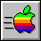

Creating Disk Images
Basic Disk Creation
There are two ways in AppleWin to create a blank floppy disk image:
Improved Disk Creation
The easiest way to to create a blank disk image is to:
- Right-Click on the Drive 1 toolbar button (or press Ctrl-F3) to open the drive pop-up menu.

- Depending on the File System desired select:
- For a blank ProDOS disk select New ProDOS 5.25" (140KB) disk image (Standard 35 Track), or
- For a blank DOS 3.3 disk select New DOS 3.3 5.25" (140 KB) disk image (Standard 35 Track).
New disks use ProDOS while older disks use DOS 3.3.
- You will then be asked to name the disk image.
The name will default to blank_floppy_###.po for ProDOS, or blank_floppy_###.do for DOS 3.3. The ### is current date-time-samp in YEAR-MON-DAY-HHh-MMm-SSs format.
- Click SAVE when ready.
You are now ready to use your new disk image.
Classic Disk Creation
In older versions of AppleWin there was only one way to natively create an empty disk image.
To create an empty disk image clicking on the drive icon and type an image file name ending in .dsk which doesn't
already exist. The emulator will automatically create a new 5.25" image
(standard 140 KB, 16 sectors/track, 35 tracks) file which is empty and non-bootable. (See Disk Sizes for more information.)
Manually putting DOS 3.3 on a blank disk
NOTE: This disk will NOT be bootable. You will need to format the disk (keep reading) to put a File System on it and (optionally) copy a Disk Operating System (DOS 3.3, ProDOS, etc.) onto it. This will make the disk bootable.
Specifying a new disk image is like inserting a blank,
unformatted floppy disk into a real drive. This means that
the image must be formatted (either by the emulator or some other utility) before it can be used.
Specifically, this is what you would do using DOS 3.3:
Click on the Drive 1 toolbar button (or press F3)
Select a MASTER.DSK DOS 3.3 disk image for drive 1.
Boot the emulated Apple by clicking on the  button (or press F2).
Click on the Drive 1 toolbar button (or press (F3) again.
Instead of selecting a disk image from the list, type in a name for a new disk image and press enter.
NOTE: The filename SHOULD end in .DSK or .DO.
Type in a program that you want DOS to run whenever this new disk is booted. A simple but useful
program is this Applesoft BASIC program:
10
PRINT
CHR$(4);"CATALOG"
Type "INIT
HELLO" to initialize (format) the disk image. This will:
- Put the DOS 3.3 File System on the disk,
- Write DOS 3.3 to the first 3 tracks and make the disk bootable,
- Write your program to disk.
You now have a working disk
image, which you can use to save documents or other information. If you
want to fill this image with data from a real floppy disk that you
have, then you need to "transfer" the disk's data. See the Transferring
Disk Images topic for more information.
Please note that not all disk image types supported by
AppleWin can be created in this manner. Since there is no way
to detect the image type from the image itself, it is determined by the
given file extension only. Six extensions are allowed:
- .DSK -- DOS 3.3 sector order
- .DO -- DOS 3.3 sector order
- .PO -- ProDOS sector order
- .HDV -- ProDOS (hard drive) volume in ProDOS sector order
- .NIB -- and older raw nibble image that supports up to 6656 (0x1A00) nibbles/tracks, and
- .WOZ -- the newest format that supports all copy protection formats.
If the extension is completely omitted,
".DSK" will be chosen by default. For more information, see Disk Image Formats.
ProDOS Disk Options
When using AppleWin to format a blank ProDOSS disk image it will have 4 files on it:
- * BITSY.BOOT
- * QUIT.SYSTEM
- * BASIC.SYSTEM
- * PRODOS
You can these individually on/off to free up a little more free disk space to make a "data disk".
Advanced Disk Options
For finer control, you can right-click on the drive icon and select the menu option New disk image...
Note: This disk will be bootable but it won't have a File System or Disk Operating System (DOS 3.3, ProDOS, etc.) on it.
Bootable Disks, Data Disks, File Systems, and Disk Operating Systems
When you use AppleWin's New disk image... to create a new blank disk it will be bootable since it place a 256 byte AppleWin-provided boot sector; this bootable disk is called a data disk.

However, all new disks will NOT have a File System or Disk Operating System (DOS 3.3, ProDOS, etc.) on it.
A File System lets you name and store files on the disk. A standard Disk Operating System lets you choose which applications or files to run, load, or save.
To make a disk usable under AppleWin you will need to format it -- either with AppleWin or some other utility (see their respective manual) -- which puts a File System on it, and optionally a DOS on it.
To put a File System on an data disk:
- Make sure your disk it not mounted in the disk drive. If it is, right-click on the drive button and select Eject.

- Right-click on the drive button and select either:
Format DOS 3.3 disk image

or
Format ProDOS disk image...

- You will see a warning depending on which OS you picked:


- You can then mount this disk and save/copy files to it.
HOWTO: Put an Operating System on new disk:
When you make a New disk image AppleWin puts a boot sector on it. You can customize the boot sector -- this can actually be any binary file, even an a bootable disk image!
Normally to put an Disk Operating System on it you would either need to a disk utility such as Copy ][+, CiderPress -- but we can take advantage of the custom boot sector and AppleWin's Select boot sector file... option to simultaneously place both a File System and Operating System on it.
To put DOS 3.3 on a blank disk:
- Make sure your disk it not mounted in the disk drive. If it is, right-click on the drive button and select Eject.
- Right-click on the drive button and select Select boot sector file...

- AppleWin will show the currect boot sector. By default it will use one built into AppleWin.

- Select Yes then select a bootable DOS 3.3 disk such as MASTER.DSK

- Right-click on the drive button and select New 5.25" disk image...
NOTE: For DOS 3.3 you MUST select a 5.25" disk since Apple DOS 3.3 does NOT suppport 3.5" or hard drives.
- Type in a name for your disk. It MUST end in .DSK or .DO.
- You can now mount and boot your new disk image.
To put ProDOS on a blank disk:
- Make sure your disk it not mounted in the disk drive. If it is, right-click on the drive button and select Eject.
- Right-click on the drive button and select Select boot sector file...
- AppleWin will show the currect boot sector. By default it will use one built into AppleWin.
- Select a bootable ProDOS disk such as ProDOS_2_4_3.po

- Right-click on the drive button and select New disk image....
NOTE: For ProDOS you can select any of the disk sizes since they are all supported by ProDOS.
- Type in a name for your disk. It MUST end in .PO or .HDV.
- You can now mount and boot your new disk image.
More Disk Tools
There are various third-party utilities to create and modify disk images. Three popular ones are:
- CiderPress 2 (newer)
- CiderPress (older)
- Copy ][+. NOTE: Version 5.0 introduced ProDOS support but if you are modifying ProDOS disks you will want to use one of the latter versions (such as 8.x or later) since earlier verions have various ProDOS bugs in them dealing with the amount of files in a directory.